เลขเวอร์ชันเป็นตัวอย่างประกอบ
"ห้องทดลอง" Linux ที่ติดตั้งเครื่องมือไว้พร้อม รันบนเครื่องของเราผ่าน Docker Desktop (Windows ใช้ WSL 2 ส่วน Mac ก็มี Docker Desktop) ทุกคนได้ Linux ชุดเดียวกัน แล้วใช้ VS Code ที่คุ้นเคยเข้าไปทำงานข้างใน
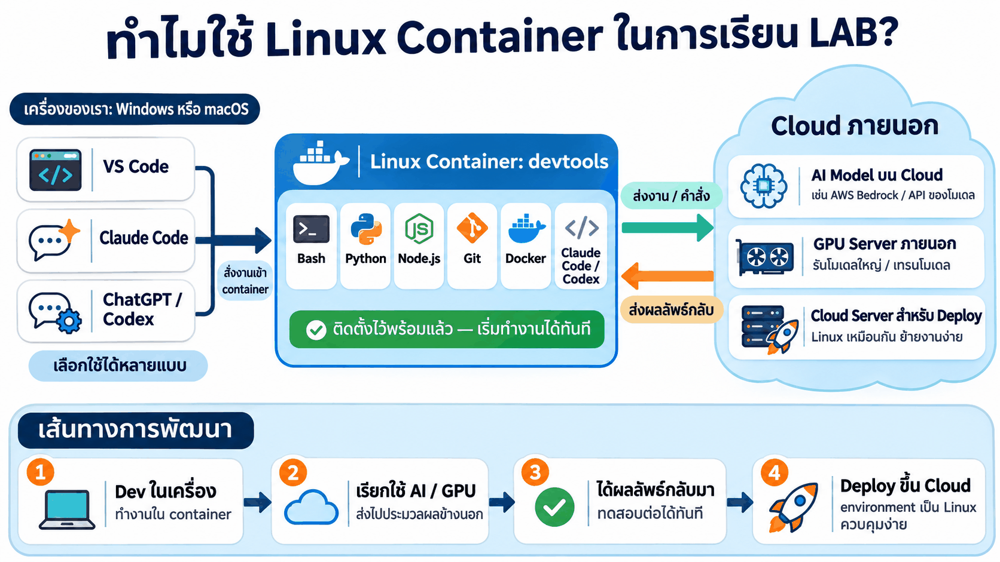
| ❌ ไม่มี container | ✅ มี container devtools | |
|---|---|---|
| เครื่องมือ | ทุกคนติดตั้งเอง เวอร์ชันไม่ตรงกัน | เริ่มจาก image ของวิชาเดียวกันทุกคน |
| คำสั่ง LAB | ต้องแปลคำสั่ง Linux เป็นของ Windows | เป็น Linux อยู่แล้ว ก๊อปวางได้เลย |
| ทดลองพลาด | เครื่องหลักพัง ลงใหม่หลายชั่วโมง | ลบ container แล้วสร้างใหม่จาก image |
| ให้ AI รันคำสั่ง | รันตรงบนเครื่องหลัก | รันในกล่องแยก พลาดก็รีเซ็ตได้ |
| ส่งงานข้าม OS | Windows ↔ Mac ต้องแปลงบรรทัด พาธ สคริปต์ | ทุกคนอยู่ใน Linux เดียวกัน แชร์แล้วรันได้เลย |
| ขยะจาก AI | กระจายในเครื่องหลัก ลบไม่หมด | อยู่ใน container ลบทีเดียวหมด |
| ไปต่อ cloud | environment ตอน dev ต่างจากตอน deploy | Linux เหมือน server ส่วนใหญ่ ย้ายงานง่าย |
--privileged เพื่อให้ใช้ Docker ข้างใน container ได้ และถ้าเชื่อมโฟลเดอร์จากเครื่องหลักเข้าไป ไฟล์นั้นก็ถูกแก้ได้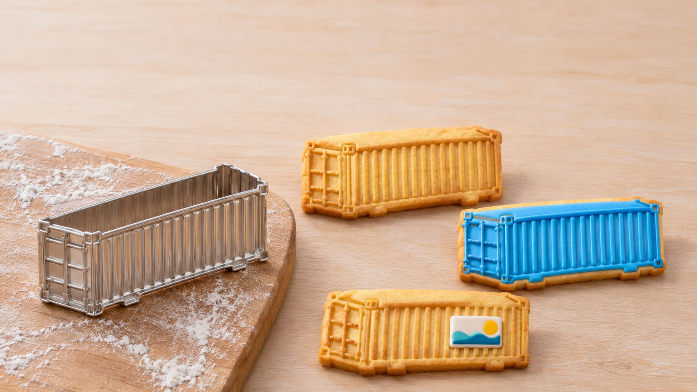
Image คือแม่พิมพ์ที่ไม่เปลี่ยน เช่น tuchsanai/devtools:2569_1
Container คือชิ้นงานที่ปั๊มจาก image แต่ละชิ้นตกแต่งเพิ่มเองได้ (ติดตั้งของ แก้ไฟล์)
ชิ้นไหนเสีย ทิ้งแล้วปั๊มใหม่ ได้ทันที แม่พิมพ์ยังอยู่ครบ
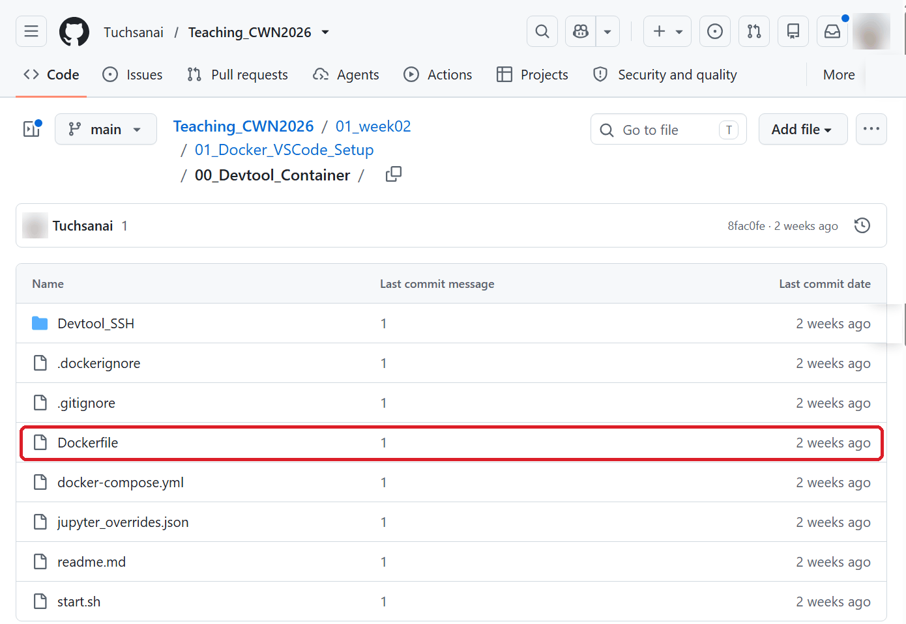
มาจากโฟลเดอร์ 00_Devtool_Container ในรีโปของวิชา ทุกคนเปิดดูได้
tuchsanai/devtools:2569_1/workspace โฟลเดอร์ทำงานวาดจาก Dockerfile และ start.sh จริงในโฟลเดอร์ 00_Devtool_Container · image นี้เป็น linux/amd64 บน Mac ชิป Apple Silicon Docker Desktop รันผ่านการจำลองได้ แต่อาจช้ากว่า
FROM ubuntu:24.04 # ① ENV TZ=Asia/Bangkok LANG=C.UTF-8 RUN apt-get install -y curl wget vim nano git \ # ② openssh-server python3 python3-pip python3-venv … RUN add-apt-repository -y ppa:git-core/ppa … # ③ RUN … apt-get install -y docker-ce docker-ce-cli \ # ④ containerd.io docker-buildx-plugin docker-compose-plugin RUN curl -fsSL https://deb.nodesource.com/setup_22.x | bash - \ && apt-get install -y nodejs # ⑤ RUN pip install "jupyterlab>=4.3,<5" jupytext jupyterlab-git … # ⑥ RUN echo 'root:passwd' | chpasswd … # ⑦ COPY start.sh /usr/local/bin/start.sh EXPOSE 22 8888 WORKDIR /workspace CMD ["/usr/local/bin/start.sh"] # ⑧
| ① | เริ่มจาก Ubuntu 24.04 ตั้งเวลาไทย |
| ② | เครื่องมือพื้นฐาน + Python + SSH server |
| ③ | Git รุ่นล่าสุด (ใช้ git worktree ได้ครบ) |
| ④ | Docker ข้างใน container (Docker-in-Docker) |
| ⑤ | Node.js 22 สำหรับเว็บ Next.js / React / Vite |
| ⑥ | JupyterLab และส่วนขยาย |
| ⑦ | บัญชี root สำหรับ SSH (รหัสเดียวกันทุกเครื่อง ใช้เรียนบนเครื่องตัวเองเท่านั้น) |
| ⑧ | ทุกครั้งที่ start รัน start.sh เปิด sshd, dockerd, JupyterLab |
ฉบับเต็มอยู่ที่ 00_Devtool_Container/Dockerfile · เครื่องหมาย … คือส่วนที่ตัดออกเพื่อให้อ่านง่าย
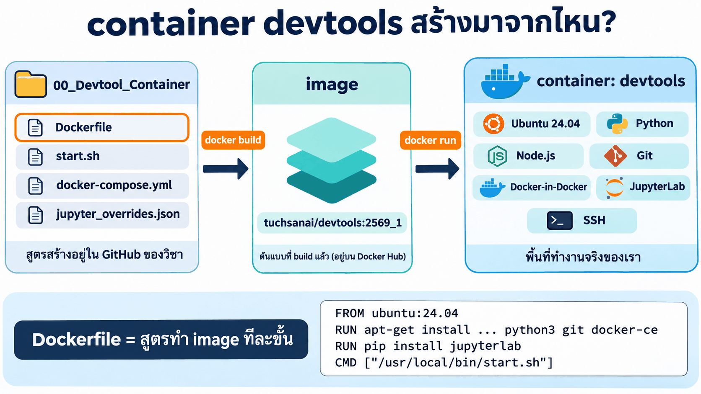
tuchsanai/devtools:2569_1 ไว้บน Docker Hub แล้ว ผู้เรียนแค่ run ก็ได้ container ทันที อยากลอง build เองดู readme ของโฟลเดอร์ (ภาพแนวคิด สร้างด้วย Imagegen)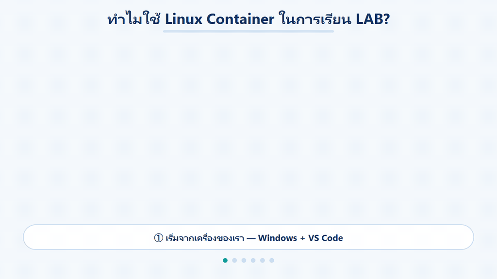
Dev ในเครื่อง
ทำงานใน container ที่มีเครื่องมือพร้อม
เรียกใช้ AI / GPU ข้างนอก
ส่งงานหนักไปประมวลผล แล้วรับผลกลับ
Deploy ขึ้น cloud
server ส่วนใหญ่เป็น Linux เหมือนกัน
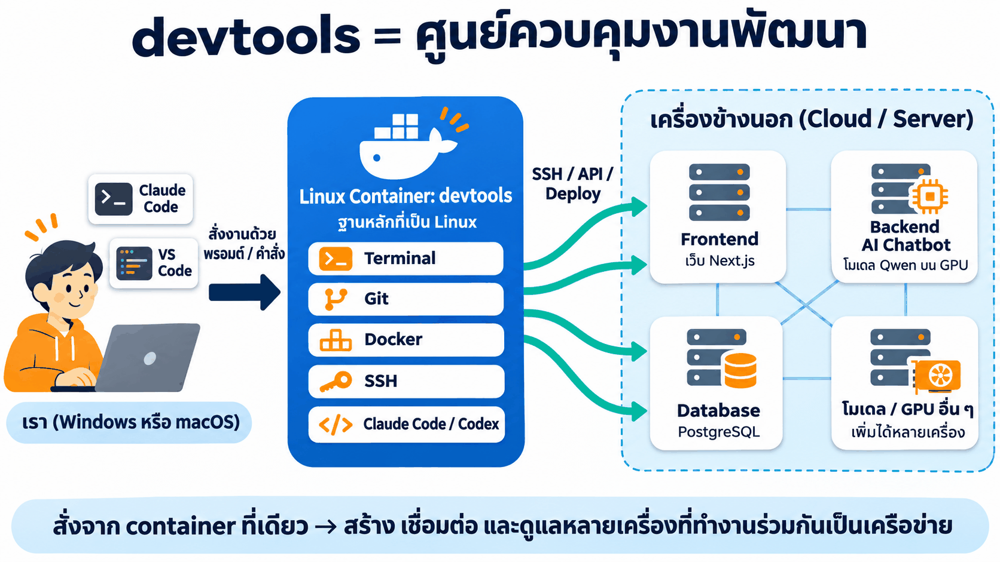
เราสั่งงานจาก Claude Code หรือ VS Code บน Windows / Mac
คำสั่งไปทำงานใน devtools ซึ่งเป็น Linux มีเครื่องมือครบ
devtools รีโมทออกไปผ่าน SSH / API / deploy เพื่อสร้างและดูแล Frontend, Backend AI chatbot (เช่นโมเดล Qwen บน GPU), Database และโมเดลอื่น ที่เชื่อมกันเป็นเครือข่าย
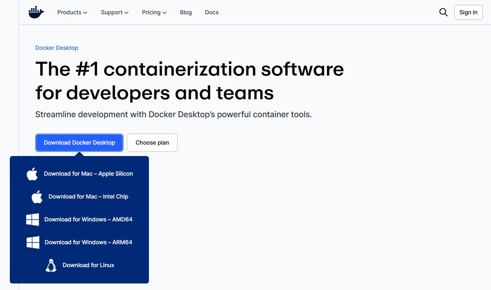
เปิด docker.com/products/docker-desktop → Download Docker Desktop
Intel / AMD เลือก Windows – AMD64 · Windows on Arm เลือก ARM64 (ไม่แน่ใจดู Settings → System → About → System type)
เปิด Docker Desktop Installer.exe จาก Downloads ใช้ค่าเริ่มต้น เลือก Use WSL 2 instead of Hyper-V
กด Close แล้วรีสตาร์ตถ้าระบบขอ
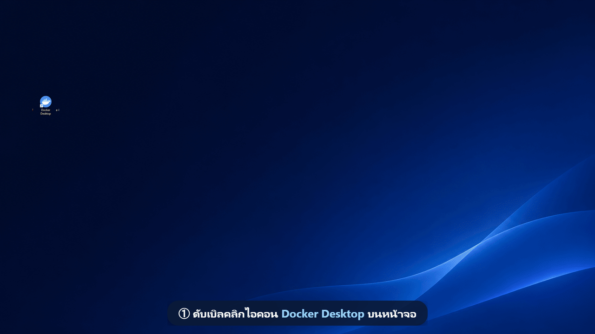
docker info เห็นส่วน Server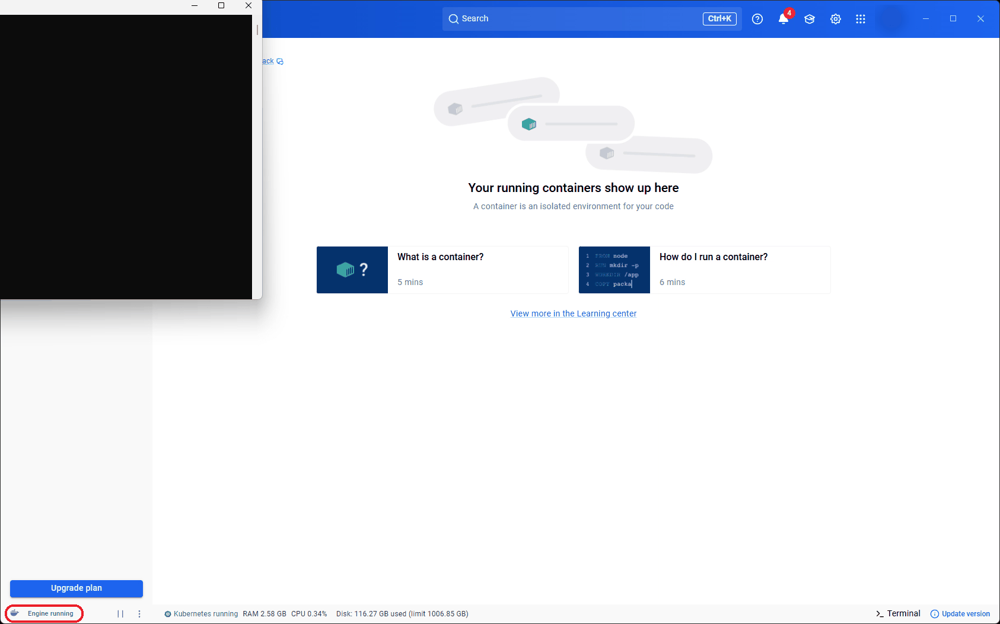
docker --version docker info
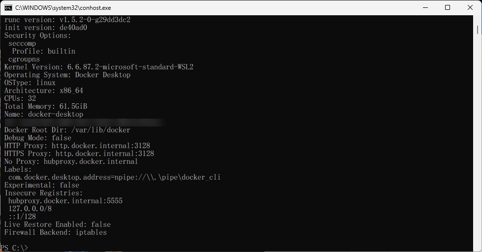
ถ้าขึ้น error during connect แปลว่า engine ยังไม่พร้อม รอจนขึ้น Engine running แล้วลองใหม่
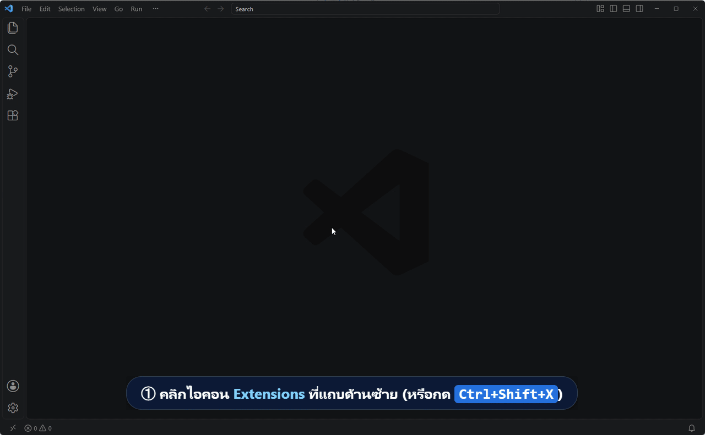
คลิก Extensions หรือกด Ctrl+Shift+X
ค้นหา Dev Containers ของ Microsoft → Install
ค้นหา Container Tools ของ Microsoft → Install
คลิก ไอคอนรูปกล่อง ที่แถบซ้าย
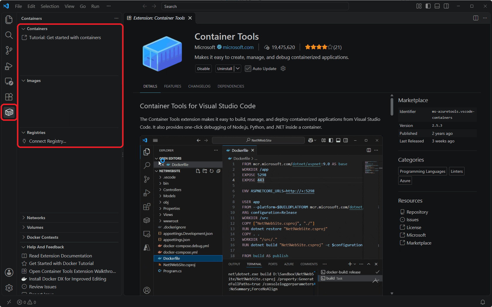
เห็นหัวข้อ Containers, Images, Registries, Networks
ตอนนี้หัวข้อ Containers ยังว่าง เพราะเรายังไม่มีห้องทดลอง…
ขั้นต่อไป เราจะ พูด ให้มันเกิดขึ้น
ไม่ต้องจำคำสั่ง Docker แค่วางพรอมต์ใน Claude Code Desktop แล้ว Claude จะสร้าง devtools ติดตั้งเครื่องมือ และทดสอบให้ดู
ระบุ image ให้ชัด: tuchsanai/devtools:2569_1
สร้าง devtools ใหม่จาก image แบบ privileged พร้อมเปิด port SSH และ JupyterLab
ใช้ตัวเดิม ถ้าปิดอยู่ก็เปิดให้ ไม่ลบของเดิม
ติดตั้ง Claude Code กับ Codex ข้างใน ตรวจเวอร์ชัน และลองรันไฟล์ทดสอบ
| บริการ | พอร์ตบนเครื่อง | ใน container |
|---|---|---|
| SSH | 2222 หรือเลขว่างถัดไป | 22 |
| JupyterLab | 8885 หรือเลขว่างถัดไป | 8888 |
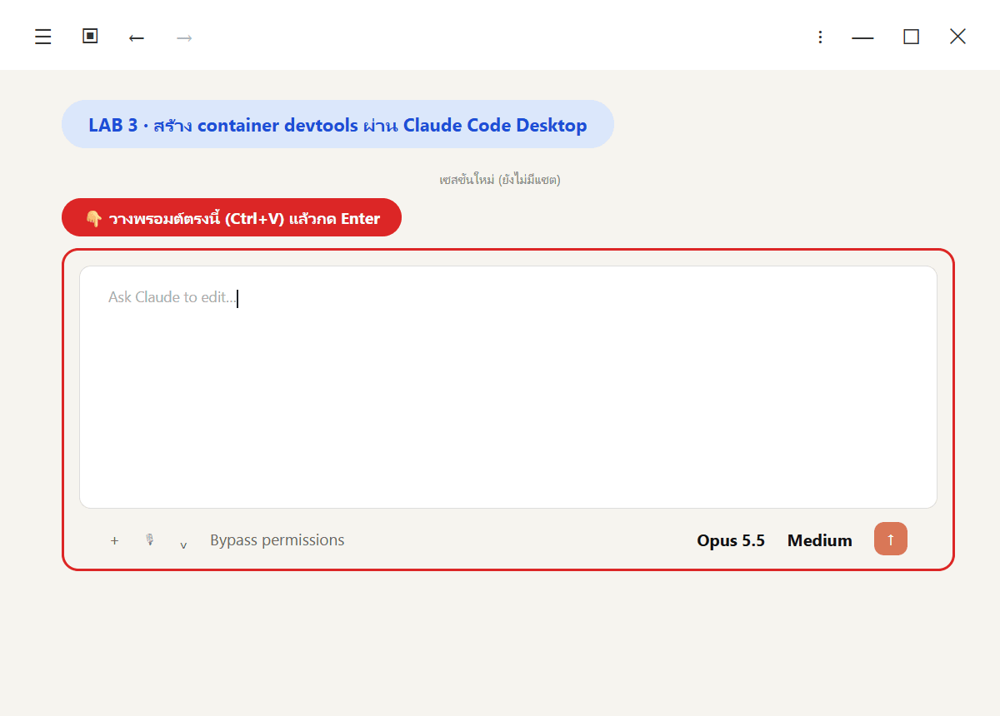
ช่วยเตรียม container ชื่อ devtools ในเครื่องผม จาก image tuchsanai/devtools:2569_1 - ถ้ายังไม่มี ให้สร้างใหม่แบบ privileged (เพราะข้างในต้องใช้ Docker ได้) เปิด port 2222 → 22 สำหรับ SSH และ 8885 → 8888 สำหรับ JupyterLab ถ้า port ไหนชน ให้ใช้เลขว่างถัดไป - ถ้ามีอยู่แล้ว ให้ใช้ตัวเดิม (ถ้าปิดอยู่ให้เปิด) ห้ามลบของเดิม จากนั้นเข้าไปทำงานข้างใน container 1. ติดตั้ง Claude Code และ Codex ถ้ายังไม่มี และทำให้พิมพ์ claude ได้เลย 2. บอกว่าข้างในเป็น Linux อะไร มี Python, Node.js, Git, Claude Code และ Codex เวอร์ชันไหน 3. สร้างไฟล์ /workspace/hello.py ให้พิมพ์ว่า Hello from devtools แล้วลองรันให้ดู สรุปผลเป็นตารางสั้น ๆ พร้อมบอก port ที่ใช้จริง
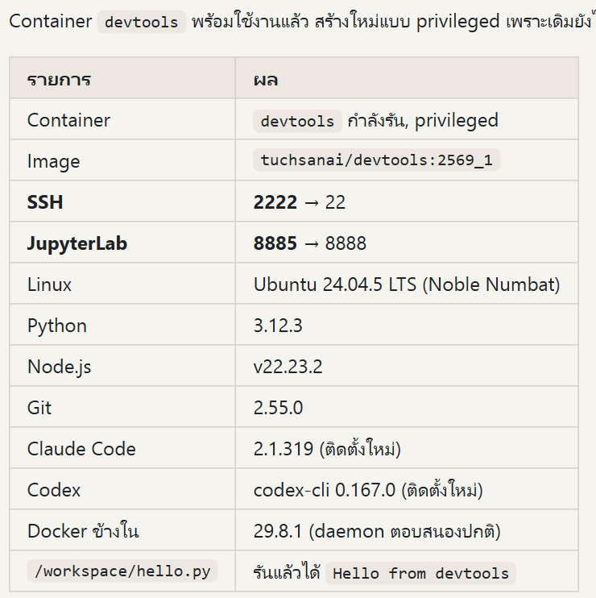
tuchsanai/devtools:2569_1 แบบ privilegedclaude ได้ทันที/workspace/hello.py ได้ Hello from devtoolsผลจริงจาก Claude Code (Opus) บน Windows เครื่องตัวอย่าง เวอร์ชันที่ผู้เรียนได้อาจใหม่กว่า
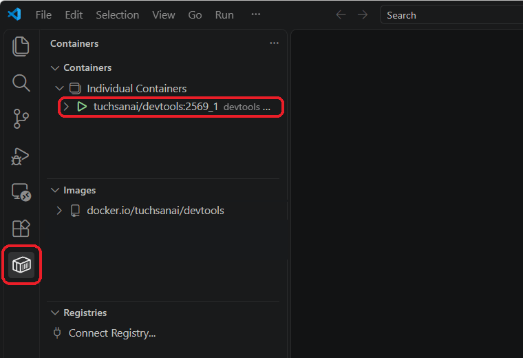
ใต้ Individual Containers เห็น tuchsanai/devtools:2569_1 · devtools
ไอคอน ▷ สีเขียว = กำลังรัน
ใต้ Images เห็นแม่พิมพ์ docker.io/tuchsanai/devtools ที่ดาวน์โหลดมา
ยังไม่เห็น กด Refresh ที่หัวแถบ และจดพอร์ตที่ใช้จริงไว้
เปิดประตูเข้า container ได้ 2 ทาง (VS Code และ JupyterLab) และดูเบื้องหลังว่า Claude สั่ง Docker อะไรให้เรา
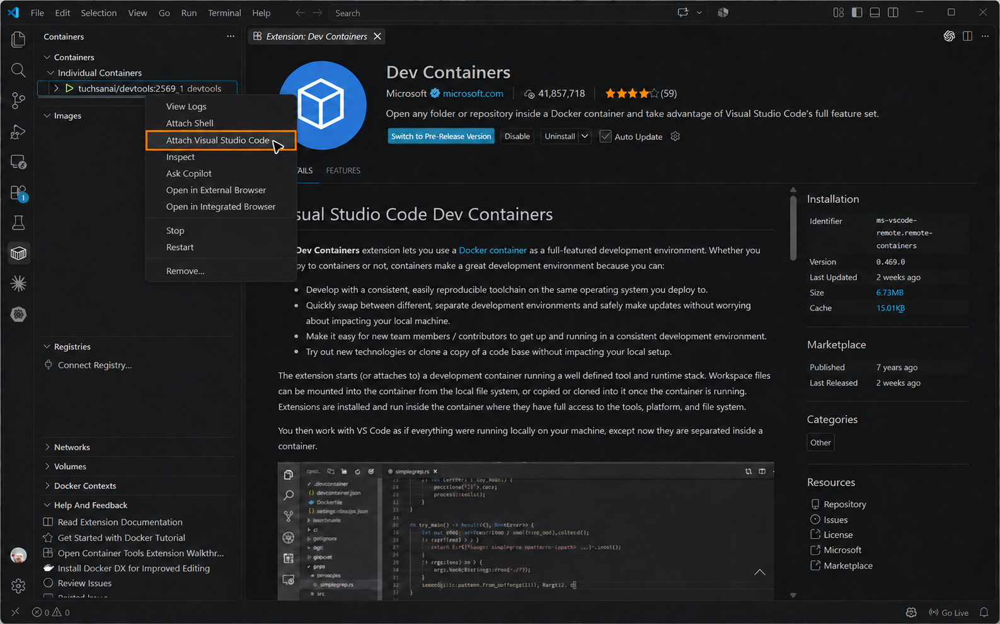
เปิดแถบ Containers หา devtools
คลิกขวา → Attach Visual Studio Code
หน้าต่างใหม่จะเชื่อมเข้า container แถบล่างซ้ายบอกว่าอยู่ใน Container
อีกวิธี: Ctrl+Shift+P แล้วค้นหา
Dev Containers: Attach to Running Container...
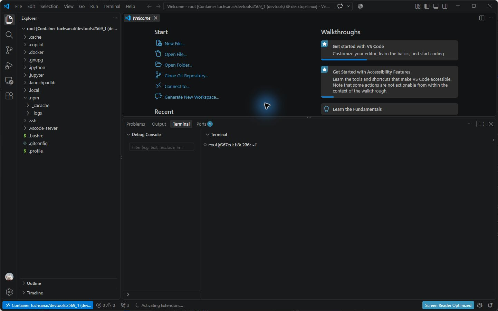
whoami claude --version codex --version
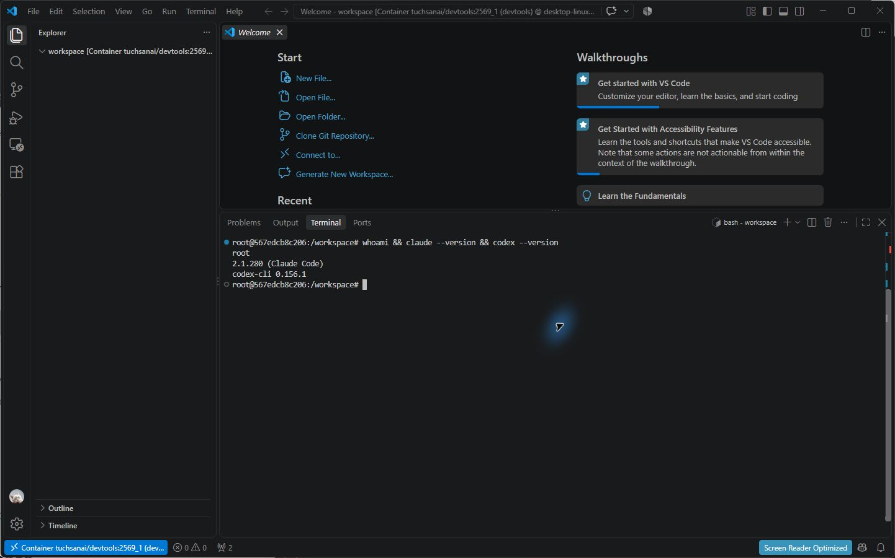
whoami ต้องได้ root อีกสองคำสั่งต้องแสดงเวอร์ชัน
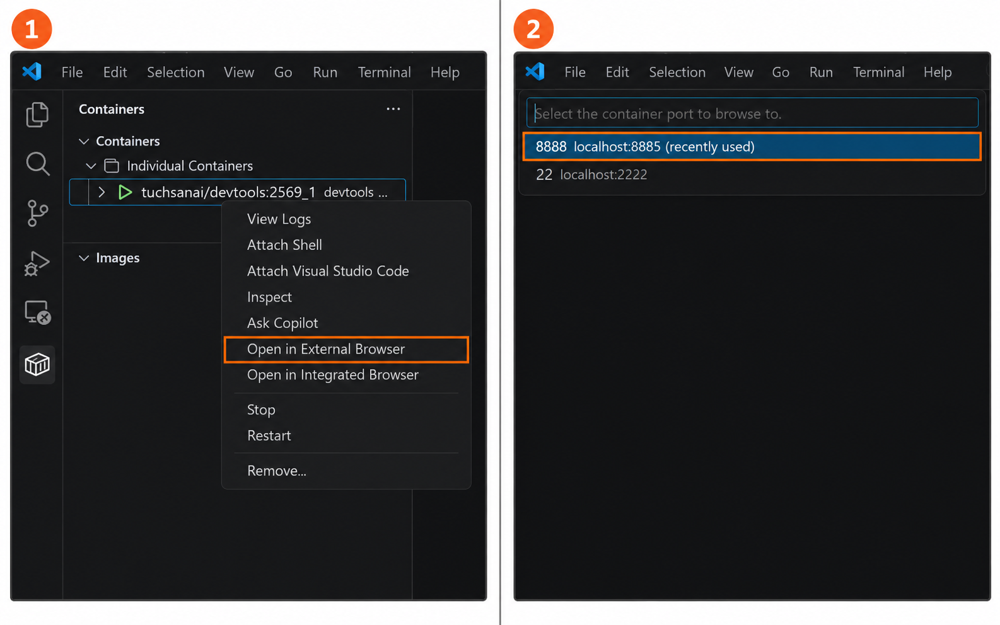
เลือก 8888 localhost:8885 = พอร์ต 8888 ใน container แมปมาที่ 8885 บนเครื่อง
เบราว์เซอร์เปิด localhost:8885/lab
ที่ Launcher เลือก Other → Terminal (ไม่เห็นกดปุ่ม +)
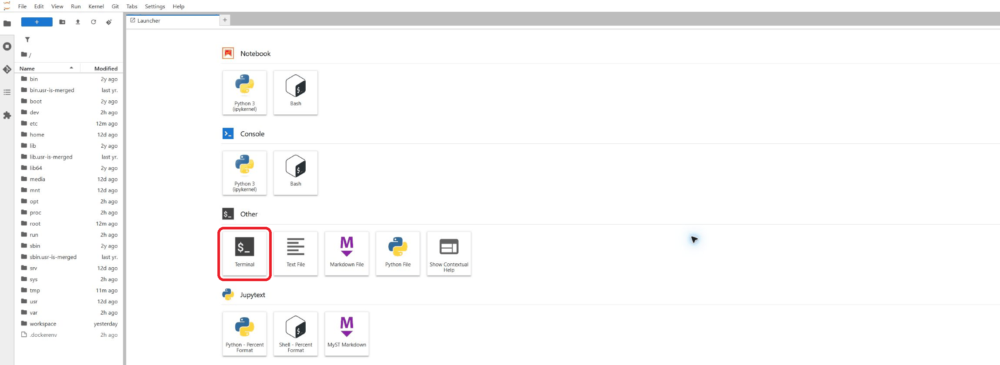
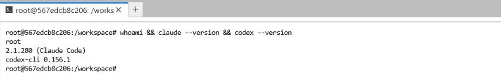
whoami claude --version codex --version
ถ้าขึ้น claude: command not found
export PATH="$HOME/.local/bin:$PATH" claude --version
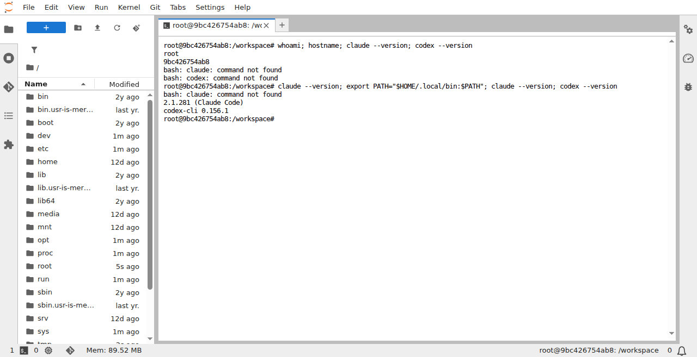
บรรทัดบน · ยังไม่ติดตั้ง ไม่พบทั้ง claude และ codex → ติดตั้งให้ครบ
บรรทัดกลาง · PATH ยังไม่มี ไฟล์อยู่ที่ ~/.local/bin แล้ว แต่ shell ยังไม่รู้จัก
บรรทัดล่าง · หลัง export PATH เห็นเวอร์ชันทั้งคู่
ตรวจเร็ว: เจอไฟล์แต่เรียกไม่ได้ = ปัญหา PATH
ls ~/.local/bin/claude
docker run -dit --name devtools --privileged \ -p 2222:22 -p 8885:8888 \ tuchsanai/devtools:2569_1 # ติดตั้ง Claude Code และ Codex ข้างใน container docker exec -it devtools bash -c \ 'curl -fsSL https://claude.ai/install.sh | bash && npm install -g @openai/codex'
ตัวอย่างจากพรอมต์ในหัวข้อ 4 ของ README ใช้กับ Claude Code ใน VS Code ได้เหมือนกัน (พรอมต์นั้นลบ devtools ตัวเดิมก่อนสร้างใหม่)
docker run | ปั๊ม container จาก image |
--name devtools | ตั้งชื่อห้องทดลอง |
--privileged | ให้ใช้ Docker ข้างในได้ |
-p 2222:22 | port เครื่องเรา : port ใน container (SSH) |
-p 8885:8888 | เปิด JupyterLab ที่ localhost:8885 |
tuchsanai/devtools:2569_1 | แม่พิมพ์ของวิชา |
docker exec | สั่งคำสั่งให้ไปรันข้างใน container |
claude
codex
คลิกช่องเพื่อติ๊กระหว่างเรียน (ไม่บันทึกถาวร)
| อาการ | สาเหตุและวิธีแก้ |
|---|---|
docker info ต่อ daemon ไม่ได้ | Engine ยังไม่พร้อม รอ Docker Desktop ขึ้น Engine running แล้วลองใหม่ |
| ติดตั้งแล้วแจ้งปัญหา WSL | ดูคู่มือติดตั้ง Docker Desktop สำหรับ Windows และรีสตาร์ตเครื่องหลังติดตั้ง |
| แถบ Containers ไม่เห็น devtools | กด Refresh และอ่านสรุปของ Claude ว่าสร้างสำเร็จหรือติดอะไร |
| พอร์ต 2222 / 8885 ถูกใช้อยู่ | ใช้เลขว่างถัดไป แล้วจดเลขที่ใช้จริงไว้เปิด JupyterLab / SSH |
claude: command not found | เช็ก ls ~/.local/bin/claude ถ้ามีไฟล์ให้ export PATH="$HOME/.local/bin:$PATH" ถ้าไม่มีให้ติดตั้งใหม่ |
| ลบ container แล้วงานหาย | ไฟล์ใน container หายเมื่อลบ เก็บงานสำคัญด้วย Git / volume / backup ก่อนลบ |